Everything Apex does
A complete tour of the modules, grouped the way the app's navigation is.
Double-entry ledger & the posting chokepoint
The heart of Apex. A hierarchical chart of accounts and an immutable journal where every posted entry is balanced, period-checked and audited.
- Chart of accounts with normal-balance & subtype
- Draft → Submit → Approve → Post workflow (optional approval gate)
- Posted entries are immutable; corrections are reversals
- Accounting periods & fiscal-year open/close
- Manual journal entries with departments, projects, funds, branches
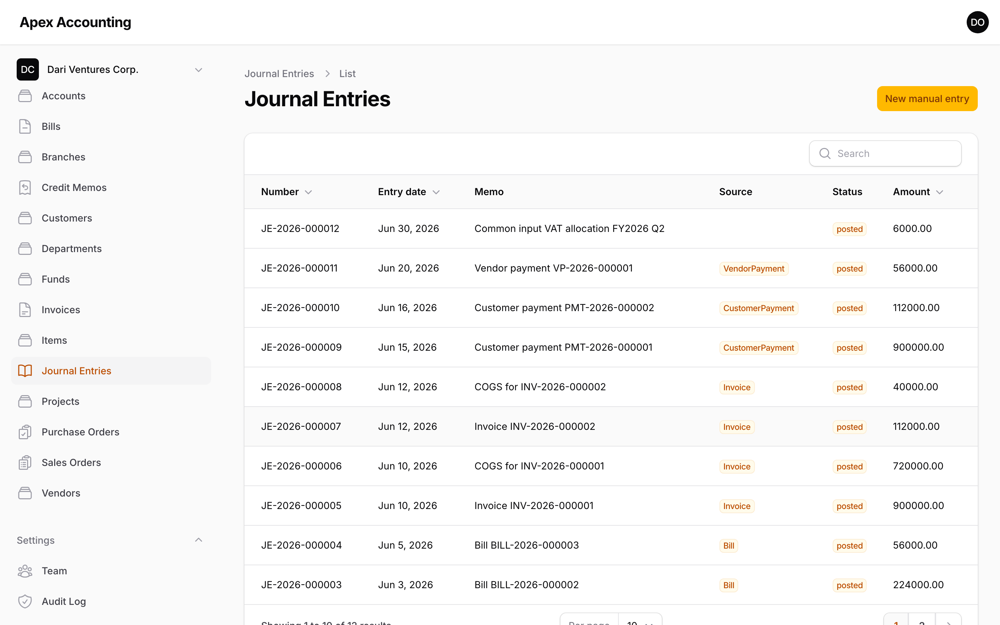
Accounts Receivable
Invoice customers with proper VAT segregation, then track every peso until it's collected.
- Sales invoices: VATable / exempt / zero-rated per line
- Credit memos & application to invoices
- Customer payments with allocation
- AR aging, statements of account, dunning letters
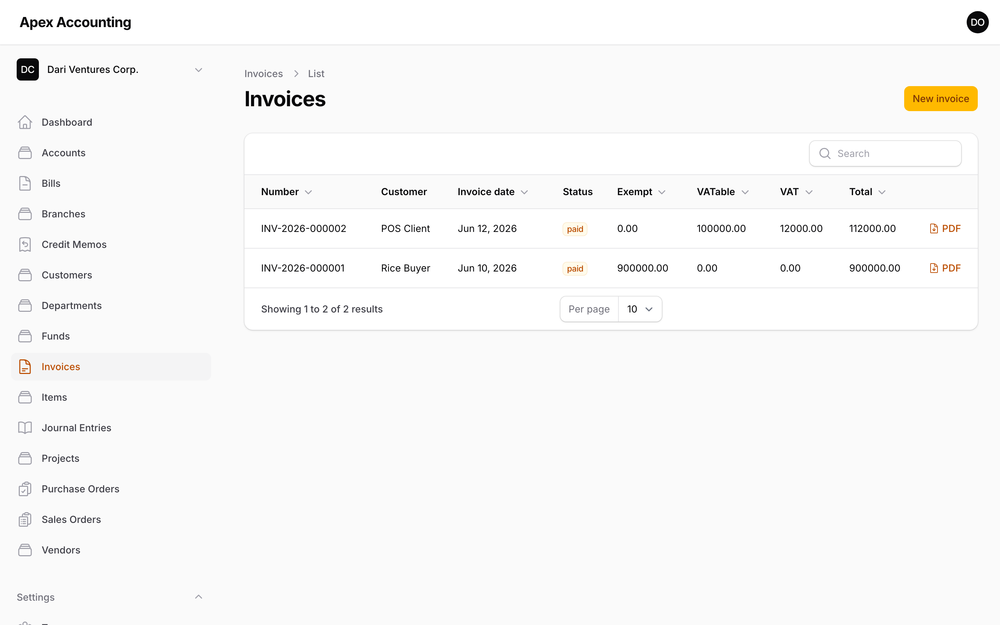
Accounts Payable
Vendor bills with the three-bucket input-VAT attribution the BIR expects, plus expanded withholding.
- Input VAT routed per line: direct-vatable, exempt, or common
- Expanded withholding tax (EWT) on payments
- Vendor payments & debit memos
- AP aging and outstanding balances
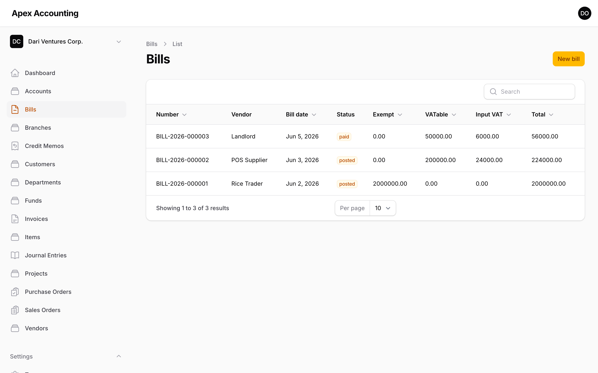
Banking & reconciliation
Import statements, match them to the ledger, and prove the bank balance.
- CSV bank-statement import with auto-match suggestions
- Reconciliation that only closes at a zero difference
- Deposits, transfers and bank charges
- Per-account currency
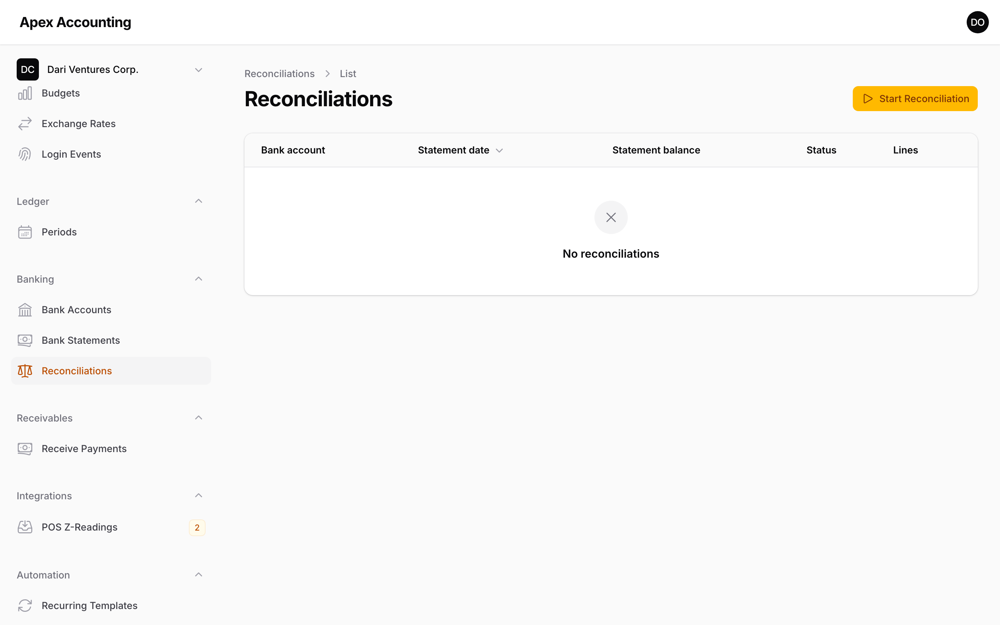
Inventory & COGS
Track stock items and let cost of goods sold post automatically.
- Goods & service items with pricing modes
- Weighted-average cost of goods sold
- Inventory adjustments for count variances
- Optional negative-stock guard
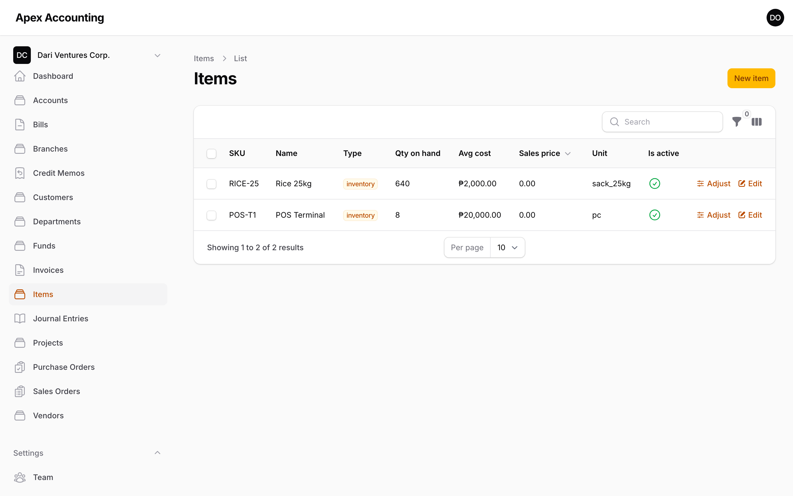
Fixed assets & depreciation
Capitalize assets and run depreciation on a schedule.
- Asset categories with useful life & rates
- Place-in-service capitalization
- Monthly depreciation runs
- Disposal with automatic gain / loss
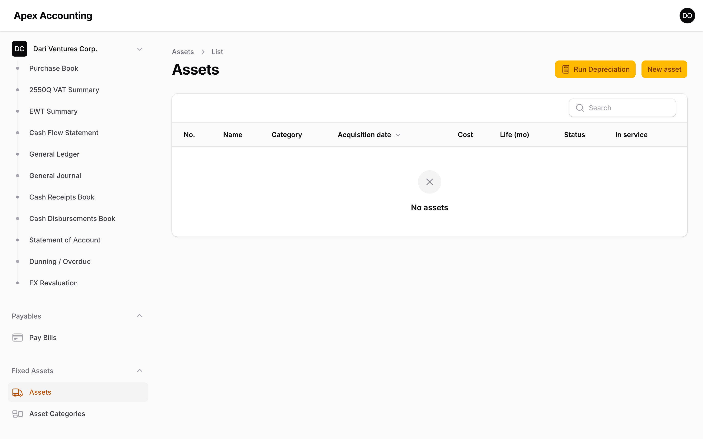
Foreign currency & FX revaluation
Transact in foreign currencies and surface the gains and losses correctly.
- Foreign-currency invoices & bills at a document rate
- Historical spot-rate table
- Month-end unrealized FX revaluation working paper
- Realized gain / loss on settlement
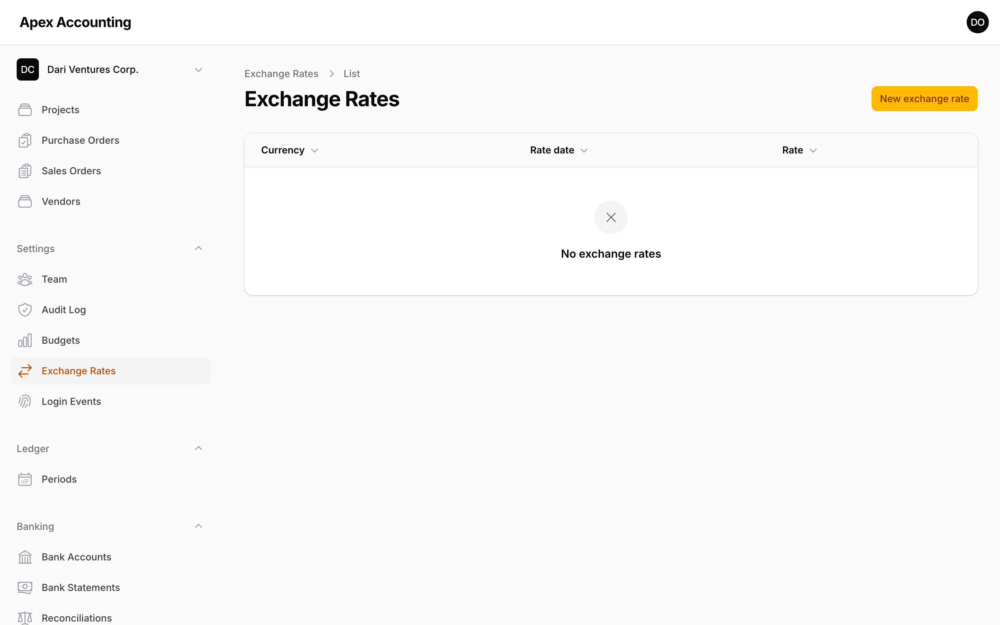
Tax & BIR compliance
Prepare and persist the quarterly and annual returns, with the supporting exports.
- 2550Q VAT · 1601EQ EWT · 2551Q percentage tax
- 1702Q corporate & 1701Q individual income tax
- Alphalist (QAP), SLSP.DAT, and 2307 certificates
- Immutable filed snapshots with PDF facsimiles
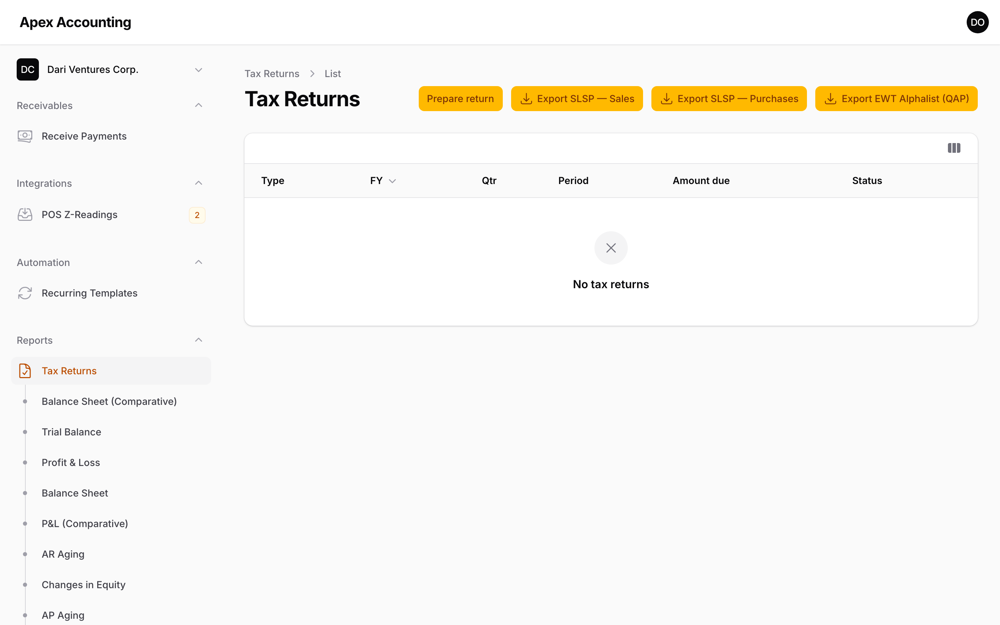
Financial & statutory reports
Twenty-plus reports, each filterable by date and exportable to PDF or XLSX.
- Trial balance, balance sheet, P&L (+ comparatives)
- Cash flow, changes in equity, general ledger & journal
- Books of accounts: Sales, Purchase, Cash Receipts, Cash Disbursements
- AR/AP aging, VAT & EWT summaries, budget vs actual
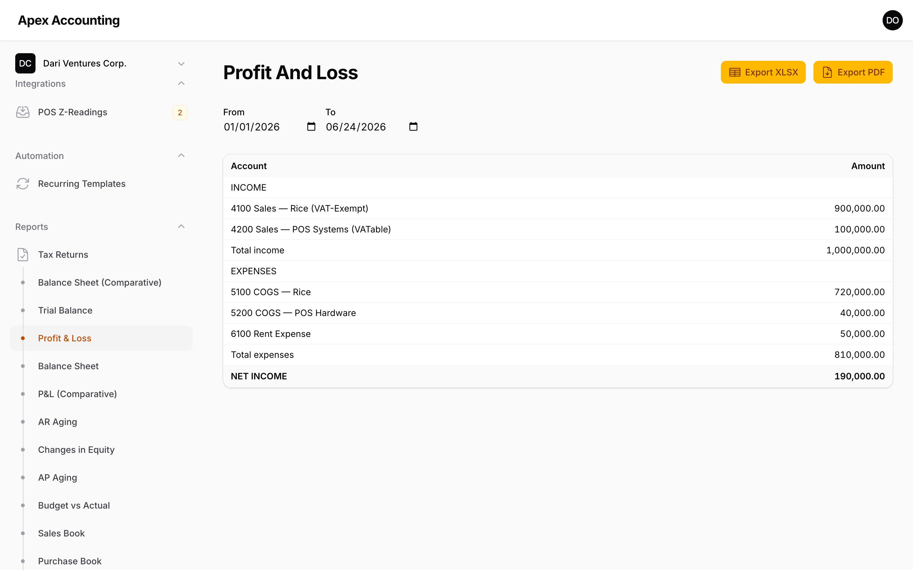
Recurring transactions
Set up invoices, bills or journal entries that repeat, and run the ones that are due.
- Recurring invoices, bills & journal entries
- Monthly, quarterly or annual schedules
- Run-due execution with an audit trail
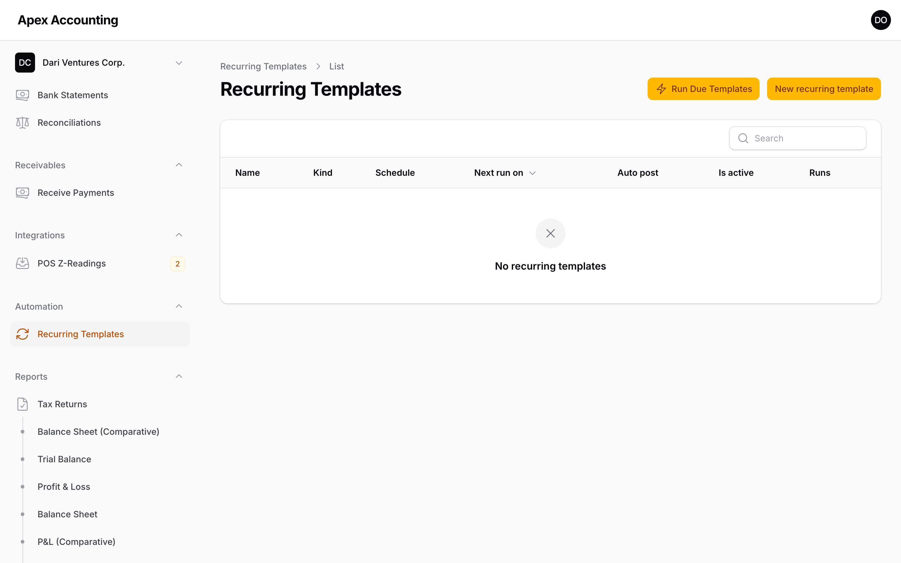
Ecosystem integration
Apex shares one API with Apex POS and Charlie HRMS — but you stay in control of what reaches your books.
- Passport-scoped, idempotent REST endpoints
- POS Z-readings land in a staging inbox — you choose what to import
- Each import becomes a draft journal entry for review
- HRMS payroll summaries mapped server-side
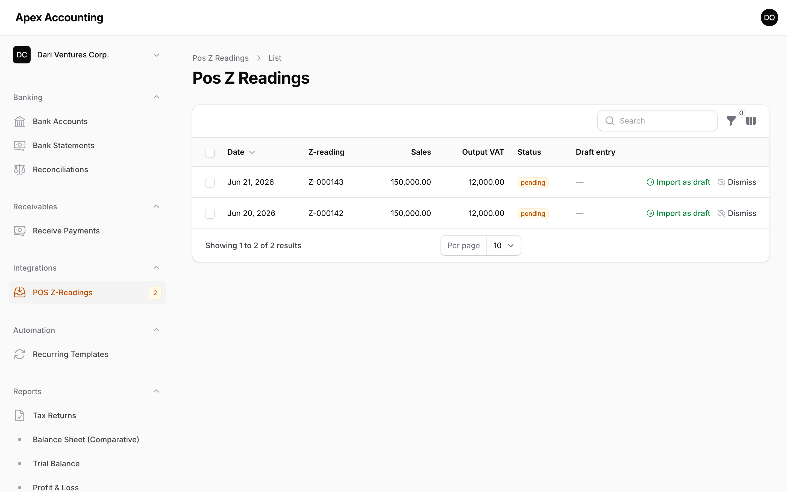
Companies, roles & audit
Run many companies from one login, each with its own users, roles and books — and a permanent audit trail.
- Multi-company tenancy; data is company-scoped
- Per-company roles (Owner, Accountant, Approver, Bookkeeper, Viewer)
- Immutable audit log & login events
- Full company data export
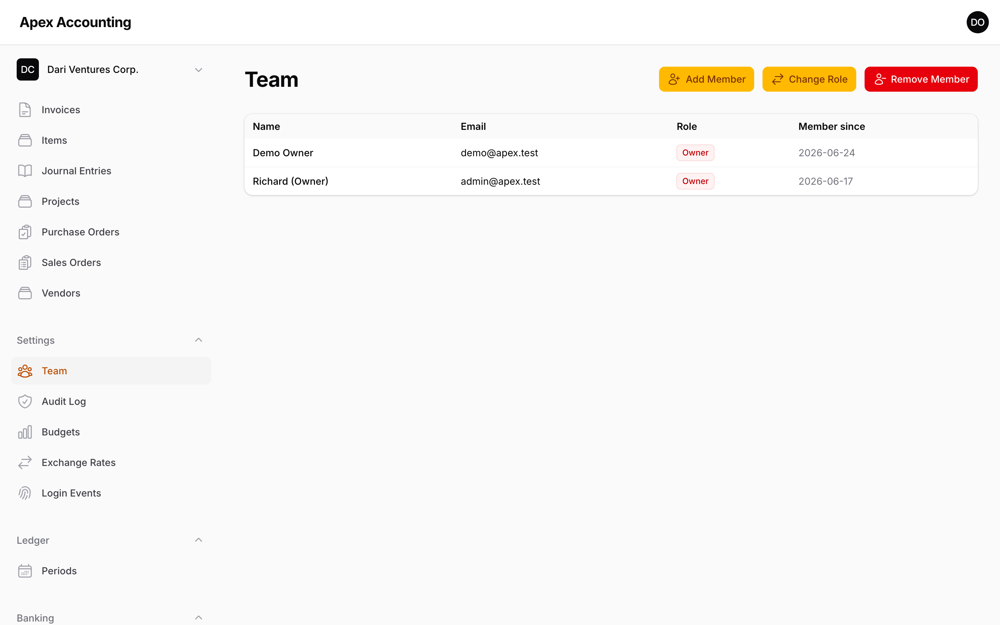
Doing the work
Short, task-oriented walkthroughs for the everyday jobs. Each follows the demo company, Dari Ventures Corp.
Sign in & choose your company
- Open /admin in your browser.
- Enter your email and password and click Sign in.
- If you belong to more than one company, pick one from the company switcher at the top-left.
- You land on the dashboard — cash position, AR, AP and running output VAT.
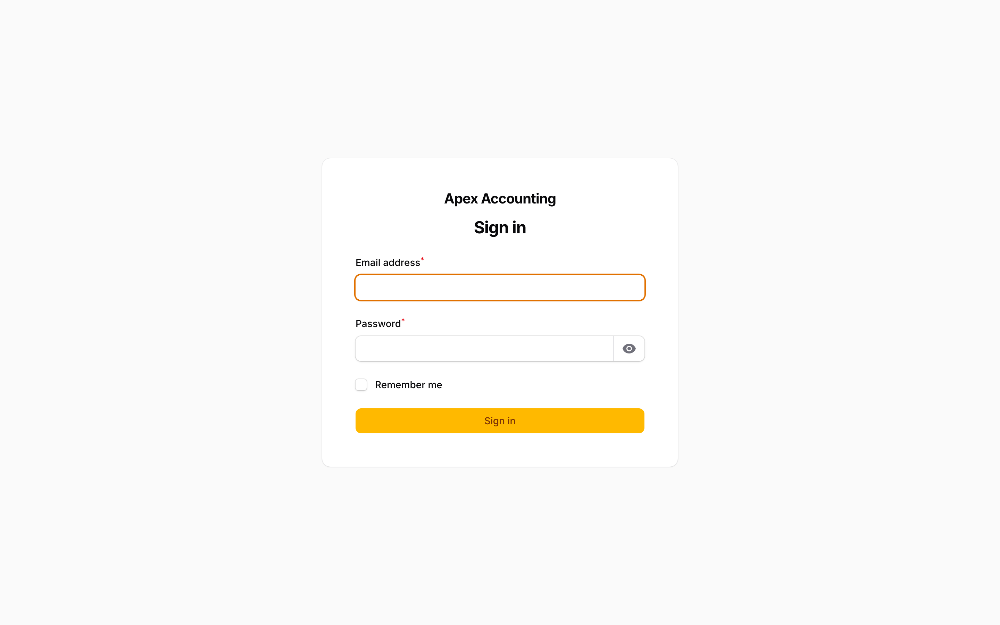
Create & post a sales invoice
- Go to Invoices and click New invoice.
- Pick the customer, the invoice date, and the pricing mode (VAT-inclusive or exclusive).
- Add line items — item or description, quantity, unit price, tax code and income account.
- Click Create. Apex builds the entry — Dr A/R · Cr Sales · Cr Output VAT — and posts it.
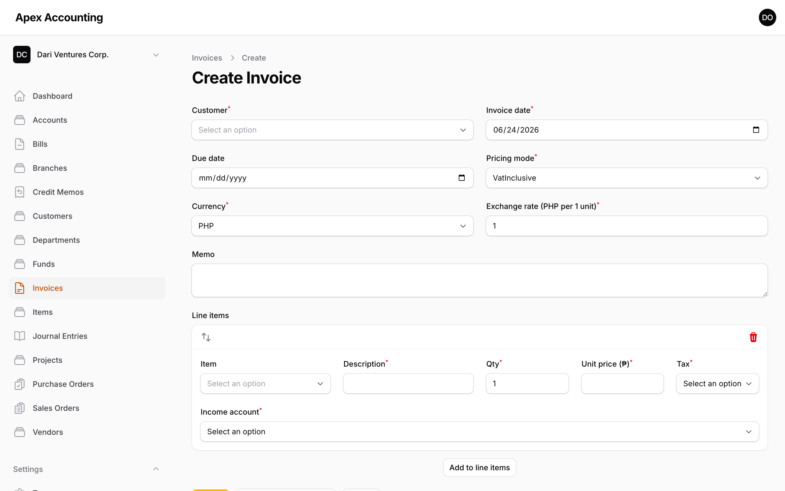
Enter a vendor bill with VAT & withholding
- Go to Bills → New bill; choose the vendor and date.
- Add expense or asset lines. For each, set the input-VAT bucket: direct-vatable, exempt, or common.
- Apply a withholding code if the vendor is subject to EWT.
- Create to post Dr expense · Dr Input VAT · Cr A/P.
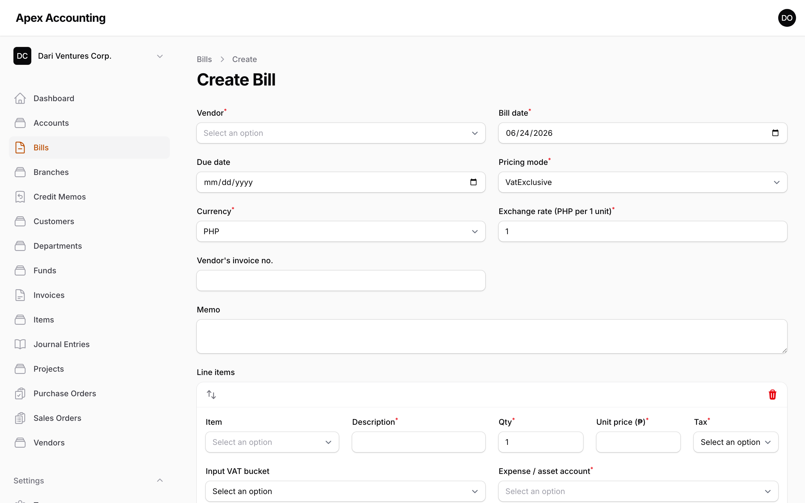
Receive a customer payment
- Open Receive Payments and start a new receipt.
- Choose the customer and the deposit account.
- Allocate the amount across one or more open invoices.
- Save — cash is debited, A/R cleared, and invoice statuses update automatically.
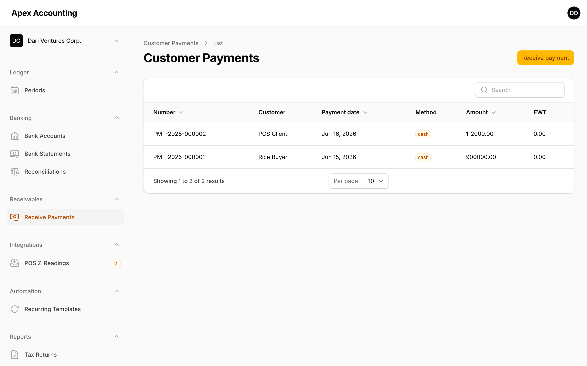
Import POS Z-readings
- Apex POS pushes each day's Z-reading to the API; it appears under Integrations → POS Z-Readings as pending.
- Review the figures — sales by VAT class, output VAT, discounts and tender mix.
- Tick the readings to keep and click Import as draft (or Import selected in bulk).
- Each becomes a draft journal entry; review and post it like any other.
Reconcile a bank account
- Under Bank Statements, Import CSV for the account.
- Use Auto-match to link lines to existing ledger entries, or Post to ledger with a contra account.
- Start a Reconciliation, tick the cleared lines, and confirm the statement balance.
- Apex closes the reconciliation only when the difference is 0.00.
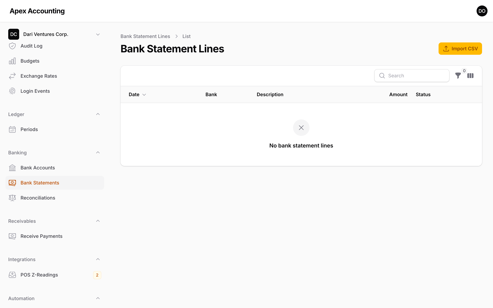
Run & export financial reports
- Open any report under Reports — say Trial Balance.
- Set the As of date (or the range, for P&L and cash flow).
- Read on screen; figures tie back to the posted ledger.
- Click Export XLSX or Export PDF to file or share.
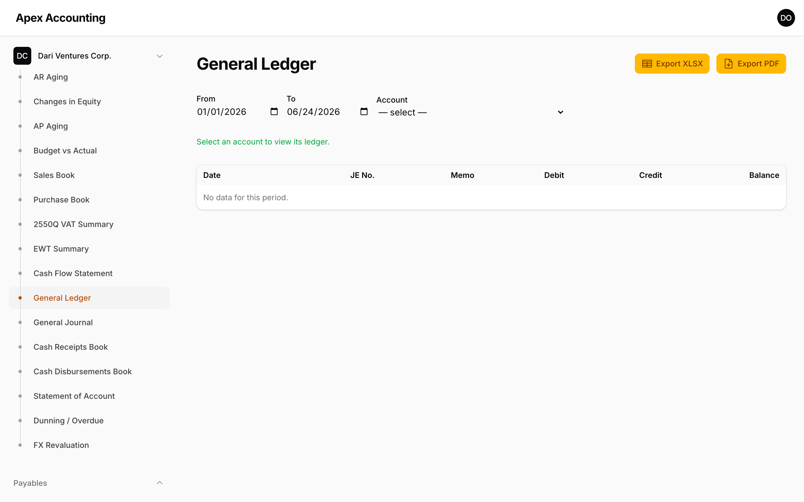
Prepare a BIR tax return
- Go to Tax Returns and choose a form (e.g. 2550Q).
- Select the period; Apex computes the figures from posted transactions.
- File to persist an immutable snapshot of the return.
- Download the PDF facsimile and any alphalist / SLSP exports.
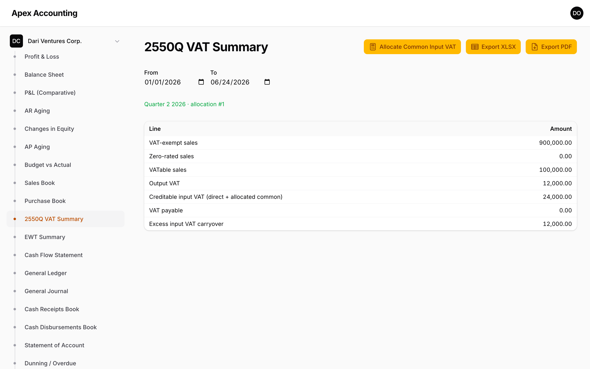
Invite users & assign roles
- Open Team (Settings).
- Add a person by email and pick their role in this company.
- Permissions follow the role — from full Owner access down to read-only Viewer.
- Every posting and login is recorded in the Audit Log.
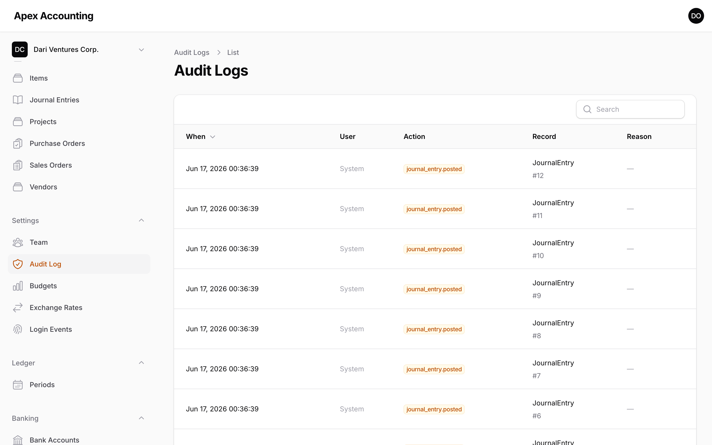
Owner
Full access, company settings, users & export.
Accountant
The full posting workflow plus reports & audit.
Approver
Approve & post; manage periods & accounts.
Bookkeeper
Draft & submit documents — no posting.
Viewer
Read-only access to reports.
Integration API
Passport-authenticated, scoped, idempotent. Base path /api/v1. Each ecosystem client gets only the scopes it needs.
| Method | Endpoint | Scope | Purpose |
|---|---|---|---|
| POST | /journal-entries | je:post | Post a balanced manual journal entry |
| POST | /invoices | invoice:post | Issue a sales invoice |
| POST | /pos/z-readings | pos:post | Stage a POS day-end Z-reading for import |
| POST | /hrms/payroll | hrms:post | Map a payroll summary to a journal entry |
| GET | /accounts | reports:read | List the chart of accounts |
| GET | /reports/trial-balance | reports:read | Trial balance as of a date |